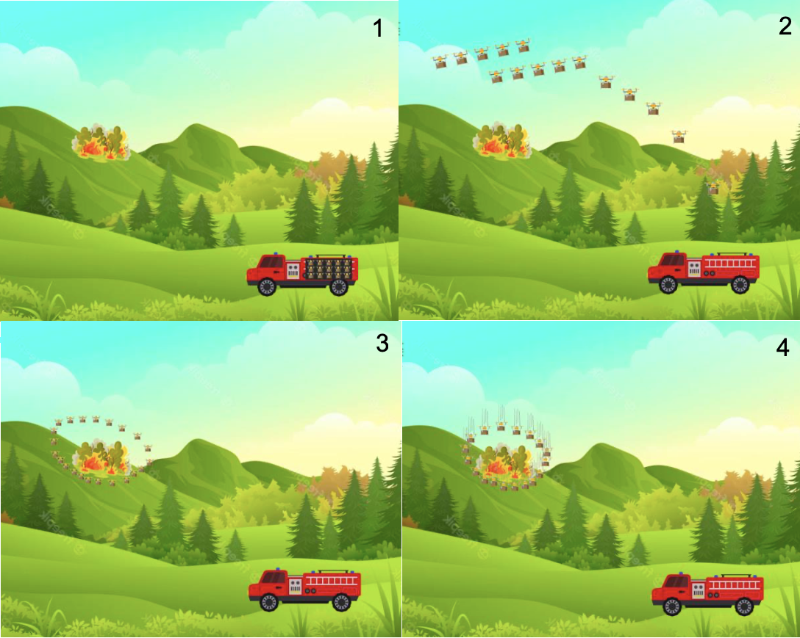

Using Self-sacrificing Drones to Combat Wildfires
An innovative approach using Autonomous, Biodegradable, Self-sacrificing (ABS) drones to combat large-scale wildfires with satellite assistance.
Read the Paper →The Escalating Threat of Wildfires
Wildfires are a growing global crisis, devastating ecosystems, communities, and economies. Their unpredictable nature and increasing frequency demand a smarter, safer, and more effective response.
7,997 More Fires
Increase in annual US wildfires in 2022 compared to 2020.
7.6 Million Acres
of US land were burned by wildfires in 2022 alone.
1.76 Billion Tons
of CO2 emissions were created by wildfires globally in 2021.

The Challenge with Current Methods
Traditional aerial firefighting, while vital, faces significant challenges. Manned aircraft are expensive, with a tanker costing over $6,000 per hour. They often have delayed response times and their drop accuracy is reduced by smoke, terrain, and weather conditions, putting pilots' lives at risk.
Our project aims to augment these efforts, providing a rapid, precise, and cost-effective first line of defense.
A New Frontier in Firefighting
We propose a fleet of Autonomous, Biodegradable, Self-sacrificing (ABS) drones. This system is designed to provide rapid deployment of fire retardant, creating crucial firebreaks and slowing a wildfire's spread before traditional aerial support arrives.
Autonomous Biodegradable Self-sacrificing (ABS) Drones
-
Rapid Response
Deployed from fire engines or watchtowers, our drones can be on-scene in minutes, a critical time-saver when wildfires can travel up to 14 mph.
-
Surgical Precision
Small and maneuverable, drones can navigate obstacles like trees and power lines to deliver retardant at precise, low-altitude locations, increasing effectiveness.
-
Enhanced Safety
The self-sacrificing design eliminates the need for complex release mechanisms and removes pilots and crew from the most dangerous, low-visibility zones.
-
Cost-Effective
Designed for single-use and mass production, these drones reduce operational costs and the financial burden associated with expensive manned aircraft.
I interviewed Capt Centoni from at Alameda County Fire (Pictured) as part of my research.
Deployment Strategy
Arrival & Detection
A fire engine carrying a fleet of ABS drones arrives at the wildfire scene.
Launch Fleet
Pre-programmed drones are released, each carrying a payload of fire retardant.
Strategic Positioning
The drone swarm encircles the fire or covers a strategic section based on satellite data.
Self-Sacrifice
Drones crash at designated points, deploying their retardant to create a firebreak.
Repeat & Support
The process is repeated as needed to contain the fire until larger air tankers arrive.
Core Technologies
Biodegradable Materials
The drone's chassis is designed with materials like mycelium (fungal threads), which are 100% biodegradable and fire-resistant. This minimizes environmental impact after the drone's single-use mission.
Aqueous Ion Batteries
Instead of flammable traditional lithium-ion batteries, we use safer, water-based aqueous lithium-ion batteries. They are non-flammable upon impact, environmentally friendly, and provide sufficient power for short-duration missions.
Satellite Integration
Using satellite data (like NASA's SMAP), drones can be guided autonomously with real-time adjustments based on fire spread, wind conditions, and terrain. This also allows for preemptive analysis of high-risk areas.